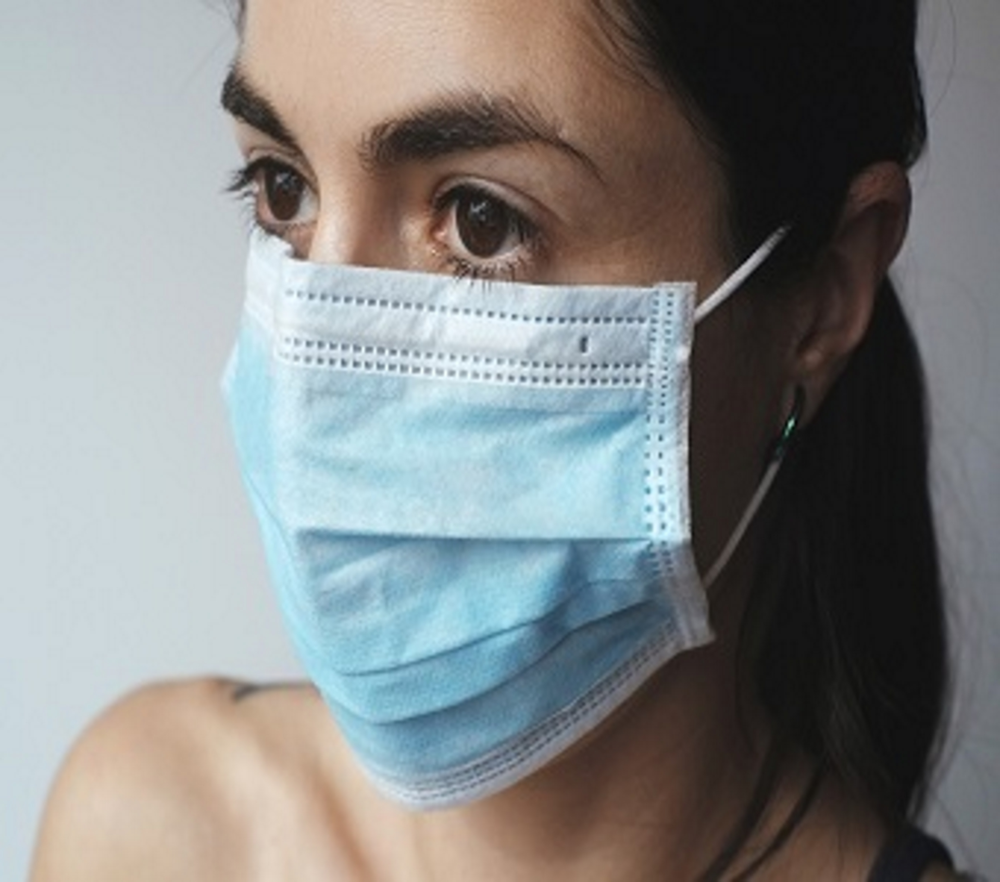

Coronavirus Disease (COVID-19)
Older adults and people who have severe underlying medical conditions like heart or lung disease or diabetes seem to be at higher risk for developing serious complications from COVID-19 illness.
Source: cdc.gov

How to protect yourself and others
Know How it Spreads
- There is currently no vaccine to prevent coronavirus disease 2019 (COVID-19).
- The best way to prevent illness is to avoid being exposed to this virus.
- The virus is thought to spread mainly from person-to-person.
- Between people who are in close contact with one another (within about 6 feet).
- Through respiratory droplets produced when an infected person coughs, sneezes or talks.
- These droplets can land in the mouths or noses of people who are nearby or possibly be inhaled into the lungs.
- Some recent studies have suggested that COVID-19 may be spread by people who are not showing symptoms.
Clean your hands often
- Wash your hands often with soap and water for at least 20 seconds especially after you have been in a public place, or after blowing your nose, coughing, or sneezing.
- If soap and water are not readily available, use a hand sanitizer that contains at least 60% alcohol. Cover all surfaces of your hands and rub them together until they feel dry.
- Avoid touching your eyes, nose, and mouth with unwashed hands.
Avoid close contact
- Avoid close contact with people who are sick
- Stay home as much as possible.pdf icon
- Put distance between yourself and other people.
- Remember that some people without symptoms may be able to spread virus.
- Keeping distance from others is especially important for people who are at higher risk of getting very sick.
Cover your mouth and nose with a cloth face cover when around others
- You could spread COVID-19 to others even if you do not feel sick.
- Everyone should wear a cloth face cover when they have to go out in public, for example to the grocery store or to pick up other necessities.
- Cloth face coverings should not be placed on young children under age 2, anyone who has trouble breathing, or is unconscious, incapacitated or otherwise unable to remove the mask without assistance.
- The cloth face cover is meant to protect other people in case you are infected.
- Do NOT use a facemask meant for a healthcare worker.
- Continue to keep about 6 feet between yourself and others. The cloth face cover is not a substitute for social distancing.
Cover coughs and sneezes
- If you are in a private setting and do not have on your cloth face covering, remember to always cover your mouth and nose with a tissue when you cough or sneeze or use the inside of your elbow.
- Throw used tissues in the trash.
- Immediately wash your hands with soap and water for at least 20 seconds. If soap and water are not readily available, clean your hands with a hand sanitizer that contains at least 60% alcohol.
Clean and disinfect
- Clean AND disinfect frequently touched surfaces daily. This includes tables, doorknobs, light switches, countertops, handles, desks, phones, keyboards, toilets, faucets, and sinks.
- If surfaces are dirty, clean them. Use detergent or soap and water prior to disinfection.
- Then, use a household disinfectant. Most common EPA-registered household disinfectant will work.